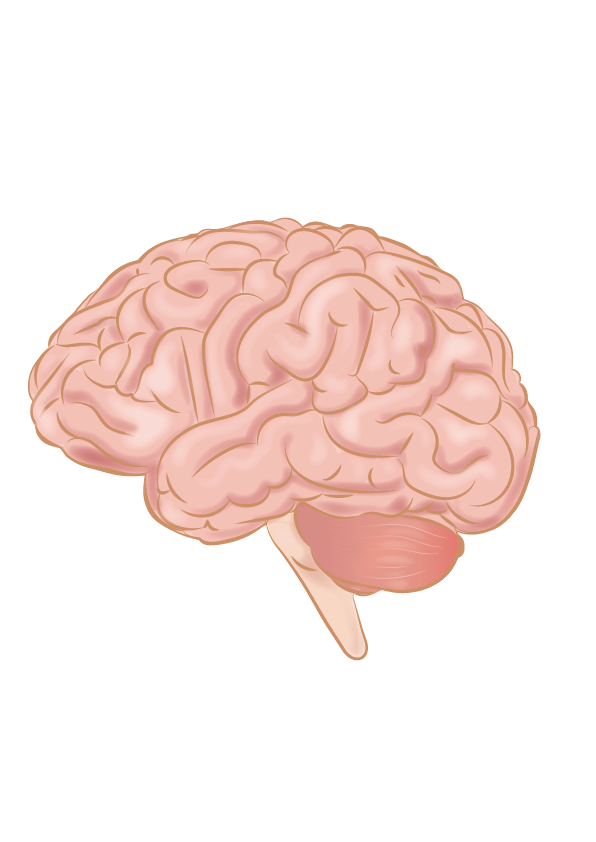
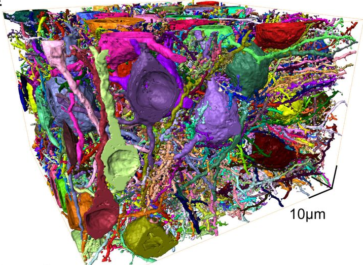
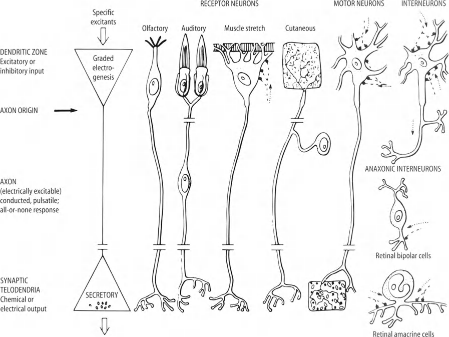
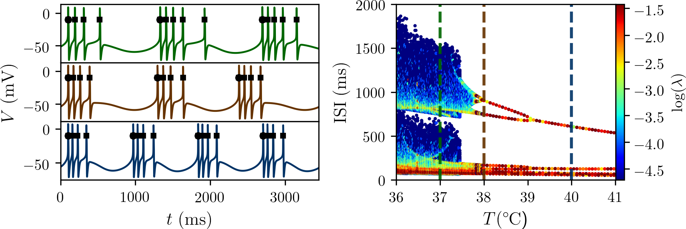
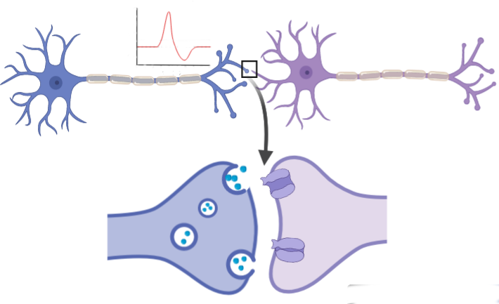
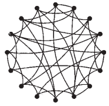
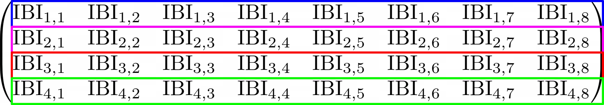
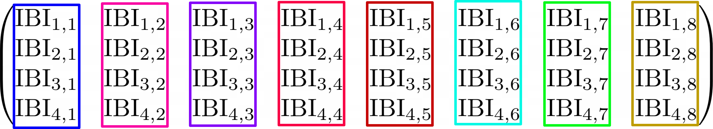
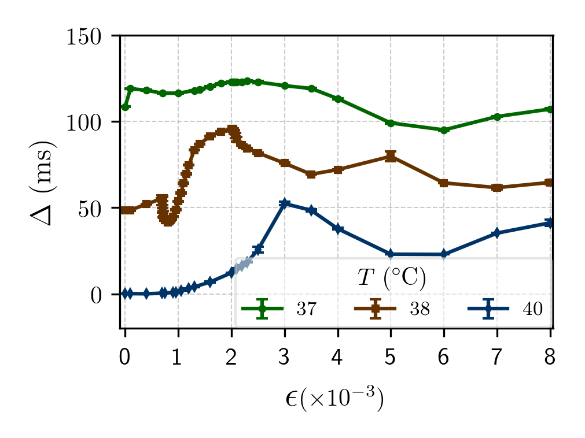

Sincronização de fase e metastabilidade em redes neurais
Defesa de Mestrado
UFPR
Introdução
Cérebro e redes neurais
Rede neurais: biological
~500000 $\mu m ^3$, (Motta, 2019)
Rede neurais: nós

Redes neurais: nós (no fundo)
\[ \] \[ \] \[ \] \[ \begin{align} C_m \frac{dV_i}{dt} = -J_1 -J_2 - \cdots -J_\mathrm{coupling}; \quad i = 1, \cdots, N\ \end{align}\] \[ \] \[ \] \[ \] \[ \]Redes neurais: comportamentos
- Sincronização de fase
- Metastabilidade
Sincronização de fase
Completamente sincronizado em fase
Completamente desincronizado em fase
Sincronização de fase
Crucial para:
- Memória (Fell, 2011)
- Consciência (Gaillard, 2009)
- Percepção (Rodriguez, 1999)
Disrupção associada a
- Epilepsia (Uhlhaas, 2006)
- Parkinson (Uhlhaas, 2006)
- Autismo (Uhlhaas, 2006)
Sincronização de fase
Mecanismos teóricos
- Communication-through-coherence (Fries, 2005)
- Binding-by-synchrony (Singer, 1999)
Metastabilidade
Vista como regime para dinâmica do cérebro
Cérebro: constantes mudanças, integração~segregação
Tirado de (Ma, 2016)
Cérebro metastável
- Metastabilidade constitui a base para a dinâmica da atividade cortical (Bressler, 2016)
- Sequência de estados metastáveis representa o fluxo de pensamentos (Fingelkurts, 2008)
Rede neural
Rede neural
Ingredientes básicos
- Neurônio
- Sinapse
- Topologia
Neurônio
Tirado de (Brown, 1999)
Spike

Tirado de https://commons.wikimedia.org/wiki/File:Action_Potential.gif
Modelo de Hodgkin-Huxley
Modelo de Huber-Braun
Modelo de Huber-Braun
Influência da temperatura
\[\begin{align} \phi &= \phi_0^{(T-T_0)/\overline{T}_0} \\ \rho &= \rho_0^{(T-T_0)/\overline{T}_0} \end{align}\] Conexões
Sinapses químicas excitatórias
$\epsilon$: parâmetro para força do acoplamento
Topologia aleatória
$N = 1000$ neurônios, $\mathcal{N} = 4000$ conexões
(Adaptada de Watts & Strogatz, 1998)
Resumo da rede
- Neurônios bursting
- Sinapses químicas excitatórias
- Topologia aleatória
Sincronização de fase, variabilidades, e promiscuidade na rede
Medida de sincronização de fase
\[\theta_{i}(t) = 2\pi k_i + 2\pi \frac{t - t_{k,i}}{t_{k+1, i} - t_{k,i}}, \; (t_k < t < t_{k+1}) \]
Parâmetro de ordem de Kuramoto \[ R(t) = \frac{1}{N}\left|\sum\limits_{i=1}^N e^{j\theta_i(t)}\right| \]
- $R(t) = 1 \rightarrow$ Sincronização de fase completa
- $R(t) = 0 \rightarrow$ Desincronização de fase
Variabilidades
Variabilidade de um neurônio
Tempos de disparo
IBI: inter-burst interval
Um neurônio
\[\\ \\ \\ \\ \\ \\ \\ \\ \\ \\ \\ \\ \\ \\ \\ \\ \\ \\ \\ \\ \\ \\ \\ \\ \\\]
\[ \mathrm{CV} = \frac{\sigma \left(\mathrm{IBI}_{i}\right) }{ \langle \mathrm{IBI}_{i} \rangle } \]
Variabilidade de redes
Variabilidade temporal
Variabilidade de ensemble
- Transições
para sincronização - Dinâmica individual ~
sincronização da rede - Variabilidades ~
sincronização da rede
Fases dos neurônios
$T = 38° C, \epsilon = 0.008, R = 0.9$
Fases dos neurônios
$T = 38° C, \epsilon = 0.00084, R = 0.92$
Promiscuidade: mudanças intermitentes no phase-locking
Medida de promiscuidade: Drift médio ($\Delta$)
$\Delta$ mede quanto os tempos de disparo relativos mudam com o tempo, em média
- $\Delta = 0 \rightarrow$ Neurônios estão phase-locked
- $\Delta > 0 \rightarrow$ Tempos relativos estão mudando
Medida de promiscuidade: Drift médio ($\Delta$)
Variabilidade de ensemble
indica a promiscuidade!
Efeito da promiscuidade em clusters
1. Agrupar as fases em clusters (Wildie, 2012)
Transformação de fase: $ \Phi(\theta) = \frac{|\mathrm{mod}(\theta,2\pi) - \pi|}{\pi} $
$\theta \in [0, 2\pi] \rightarrow \Phi \in [0, 1] $
Diferença de fases $\Phi$ se comporta bem!
- Inicializa o cluster com um neurônio.
- Calcula diferença entre fases do cluster e fases dos neurônios fora.
- Seleciona a menor e compara com um limiar $\Phi_\mathrm{th}$.
- Se estiver abaixo, colocar o neuronio no cluster e repetir.
- $\Phi_\mathrm{th} \rightarrow$ quão parecidas são as fases
Efeito da promiscuidade em clusters
1. Agrupar as fases em clusters (Wildie, 2012)
$\Phi_\mathrm{th} = 0.1$
$\Phi_\mathrm{th} = 0.05$
Efeito da promiscuidade em clusters
2. Comparar clusters em tempos diferentes
Número de neurônios por cluster
$\mathcal{P}$: taxa de mudança na composição de um cluster.
\[ \\ \\ \\ \\ \\ \\ \\ \\ \\ \\ \\ \\ \\ \\ \\ \\ \\ \\ \\ \\ \\ \\ \\ \\ \\ \\ \\ \\ \\ \\ \\ \\ \\ \\ \\ \\ \\ \\ \\ \\ \\ \\ \\ \\ \\ \\ \\ \\ \\ \\ \\ \\ \\ \\ \\ \\ \\ \\ \\ \\ \\ \\ \\ \\ \\ \\ \\ \\ \\ \\ \]
\[ \\ \\ \\ \\ \\ \\ \\ \\ \\ \\ \\ \\ \\ \\ \\ \\ \\ \\ \\ \\ \\ \\ \\ \\ \\ \\ \\ \\ \\ \\ \\ \\ \\ \\ \\ \\ \\ \\ \\ \\ \\ \\ \\ \\ \\ \\ \\ \\ \\ \\ \\ \\ \\ \\ \\ \\ \\ \\ \\ \\ \\ \\ \\ \\ \\ \\ \\ \\ \\ \\ \]
\[ \\ \\ \\ \\ \\ \\ \\ \\ \\ \\ \\ \\ \\ \\ \\ \\ \\ \\ \\ \\ \\ \\ \\ \\ \\ \\ \\ \\ \\ \\ \\ \\ \\ \\ \\ \\ \\ \\ \\ \\ \\ \\ \\ \\ \\ \\ \\ \\ \\ \\ \\ \\ \\ \\ \\ \\ \\ \\ \\ \\ \\ \\ \\ \\ \\ \\ \\ \\ \\ \\ \]
\[ \\ \\ \\ \\ \\ \\ \\ \\ \\ \\ \\ \\ \\ \\ \\ \\ \\ \\ \\ \\ \\ \\ \\ \\ \\ \\ \\ \\ \\ \\ \\ \\ \\ \\ \\ \\ \\ \\ \\ \\ \\ \\ \\ \\ \\ \\ \\ \\ \\ \\ \\ \\ \\ \\ \\ \\ \\ \\ \\ \\ \\ \\ \\ \\ \\ \\ \\ \\ \\ \\ \]
\[ \\ \\ \\ \\ \\ \\ \\ \\ \\ \\ \\ \\ \\ \\ \\ \\ \\ \\ \\ \\ \\ \\ \\ \\ \\ \\ \\ \\ \\ \\ \\ \\ \\ \\ \\ \\ \\ \\ \\ \\ \\ \\ \\ \\ \\ \\ \\ \\ \\ \\ \\ \\ \\ \\ \\ \\ \\ \\ \\ \\ \\ \\ \\ \\ \\ \\ \\ \\ \\ \\ \]
Efeito da promiscuidade em clusters
- Composições clusters ~
promiscuidade ~
variabilidades - Análise promiscuidade
variando $\Phi_\mathrm{th}$
Metastabilidade
Em neurociência: definições
Várias diferentes, mais comuns são:
- 1a: variabilidade de estados
- 1b: variabilidade de padrões de atividade
- 1c: variabilidade de sincronização
- 1d: variabilidade de regiões no espaço de fase
- 1e: variabilidade de regiões no panorama de energia
- 2: regime para integração~segregação
Mecanismos
- Variação de parâmetros ou forçamento externo
- Dinâmica intrínseca
Em neurociência: definições
Várias diferentes, mais comuns são:
- 1a: variabilidade de estados
- 1b: variabilidade de padrões de atividade
- 1c: variabilidade de sincronização
- 1d: variabilidade de regiões no espaço de fase
- 1e: variabilidade de regiões no panorama de energia
- 2: regime para integração~segregação
Em quase qualquer definição, há uma dependência da visão específica com as escalas do sistema.
Escalas
(Betzel, 2017)
\[ \\ \\ \\ \\ \\ \\ \\ \\ \\ \\ \\ \\ \\ \\ \\ \\ \\ \\ \]
- Espacial: granularidade dos nodos
- Temporal: escala temporal
- Topológica: quantidade de nodos
Exemplos na escala topológica: metastabilidade como
- Macro: sincronização da rede
- Meso: clusters
- Micro: sincronização par-a-par
Na rede
Promiscuidade é um tipo de metastabilidade
Metastabilidade pode depender da escala!
Conclusões
Estudo e caracterização da rede neural
- Sincronização de fase: relacionada com dinâmica individual dos neurônios
- Correlação variabilidade com sincronização de fase
- Variabilidades iguais
- Promiscuidade: caracterização e efeito nos clusters
- Metastabilidade e heterogeneidada dinâmica
- Variabilidade mede a heterogeneidade dinâmica
- Metastabilidade não precisa surgir de parâmetros distintos
Metastabilidade em neurociência
- Mini-revisão das definições
- Mecanismos
- Estudo em várias escalas
Trabalhos futuros
Partindo do trabalho aqui, pretendemos:
- Propor definição geral de metastabilidade
- Estudar a fundo mecanismos de metastabilidade, e procurar em dados experimentais
Sincronização de fase e metastabilidade em redes neurais
Defesa de Mestrado
UFPR